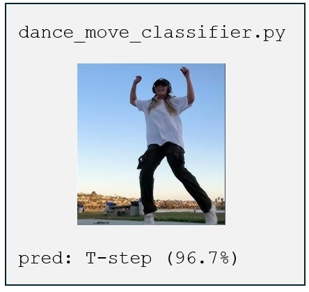
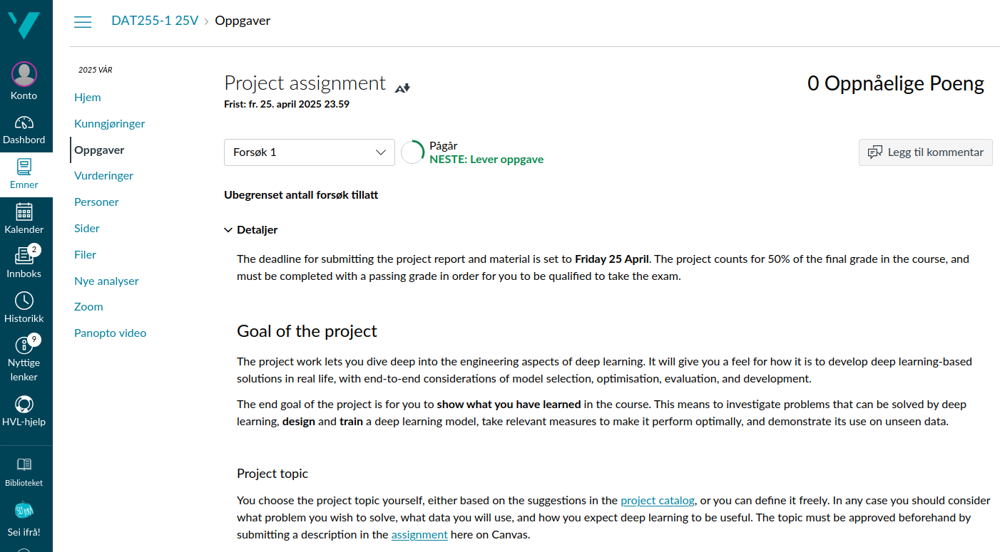

DAT255: Deep learning engineering
Lecture 10 – Project kickoff
Project kickoff
Today:
A second look at project topics
Some cool examples by Vegard and Jobjørn
Details about:
- Project scope
- Requirements and recommendations
- Report and material
Project topic
Up to you! Be creative but reasonable
We have one rule:
Relevant data must exist and be readily available(IRL it never is, but this is not our concern right now)
and one guideline:
Pick something you find interesting and motivating
Projects are approved by sending in short description on Canvas,
deadline next Friday, 28 Feb

Demo
Assignment description
… is now on Canvas:

Note: The final submission will be on WiseFlow. Details to follow later
Formalities
Project counts for 50% of the final grade
Exam counts for the other 50%
You need a passing grade on the project in order to take the exam
The deadline is 25 April
- Since the project is graded and goes into the strict WiseFlow system, there is no possibility for an extension.
Zero, 0, none.
- Since the project is graded and goes into the strict WiseFlow system, there is no possibility for an extension.
Scope and expectations
Mandatory to do:
- Identify a use case for deep learning methods
- Construct and train a deep neural network
- Make an objective evaluation of model performance
Recommended to do:
- Compare different methods and strategies
- Make use of tools for effective optimisation/monitoring/experimentation
- Investigate quality of the model prediction
Very recommended: Deploy our model as a web app
In short: Show what you’ve learnt in the course
Submission format
We want to see two things:
A report
Motivate your choices, describe the implementation, document your experiments, and analyse the outcome.
Was it a success? What could have gone better?A template for the report will be provided.
The code
Everything needed to reproduce your results must be put in a GitHub repo and made accessible.
The code must be understandable
The exact evaluation criteria are listed on Canvas
FAQ 💬
- Can I copy code from StackOverflow?
Yes, but you must always cite your sources
- Can I use ChatGPT / Cursor /
<some AI tool>for coding and report writing?
Yes, but you must always cite your sources
- Can I use pretrained models?
Yes, a long as you modify and retrain at least one model
- Can I use API calls to OpenAI / DeepSeek /
<some service>instead of training my own model?
No, but you can use it in addition to your own model
Next week: Project week 🙌
- No lectures, work on the project
- Remember to submit project description
- Help / hints / questions:
- I will be available both on Zoom and in physical form in lecture & lab hours
- Send me a message to find a time
- Usual lectures again the week after